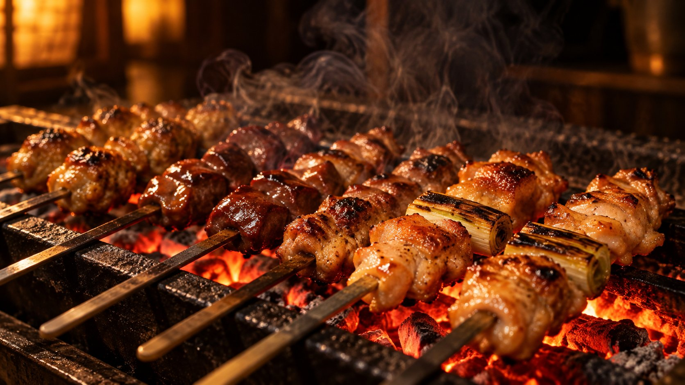
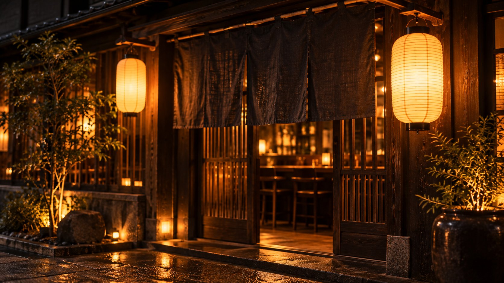

SUMIBI YAKITORI AKARI
炭火が、灯る夜。
厳選した地鶏と、備長炭の香ばしさ。
炭火焼鳥 燈 / SUMIBI YAKITORI AKARI
ABOUT
燈のこだわり
燈は、「一串に、火と手間を惜しまない」を信条に、備長炭による炭火焼きにこだわる焼鳥専門店です。
火加減がすべてを左右する炭火焼きだからこそ、串一本一本に目を配り、脂の乗り、香ばしさ、じゅわりと広がる肉汁まで、最良の一瞬を見極めてお出ししています。派手さよりも、素材と技の確かさを大切にしたい。そんな想いから、鶏は信頼できる契約農家の銘柄鶏のみを使用し、タレは開業以来継ぎ足しながら三年かけて育てた自家製のものを使っています。
カウンター越しに炭火の熾る音と香りを感じながら、ゆったりとお過ごしいただける空間。おひとりでのご来店から、大切な方との会食、少人数の貸切まで、隠れ家のような一夜をお約束します。
MENU
名物の炭火焼鳥


燈の理念
Our
Belief
一串に、火と手間を惜しまない。
その一本のために、今日も炭を熾します。

火加減がすべてを左右する炭火焼きだからこそ、
串一本ごとに目を配り、最良の一瞬を見極める。
派手さよりも、素材と技の確かさを大切にしたい。そんな想いから、鶏は信頼できる契約農家の銘柄鶏のみを使用し、タレは開業以来継ぎ足しながら三年かけて育てた自家製のものを使っています。ここでしか味わえない一夜を、静かに、丁寧に。
01
火を、読む。
備長炭の熾火の表情を見極め、脂の乗りと香ばしさが重なる一瞬で焼き上げます。
02
素材を、選ぶ。
鶏は信頼できる契約農家の銘柄鶏のみ。届いたその日に仕込み、余計な手は加えません。
03
時を、重ねる。
開業以来継ぎ足し、三年かけて育てた自家製のタレ。積み重ねた時間が、深みになります。

SHOP INFO
店舗情報
- 住所
- 〒000-0000 〇〇県〇〇市〇〇町1-2-3
- 営業時間
- 17:00〜24:00（L.O. フード23:00 / ドリンク23:30）
- 定休日
- 日曜日
- 席数
- カウンター8席、テーブル3卓（12席）、個室1室（4〜6名）
- 駐車場
- なし（近隣コインパーキングをご利用ください）
- アクセス
- 〇〇駅から徒歩3分
CONTACT
ご予約・お問い合わせ
カウンター席・個室のご予約、貸切・宴会のご相談はお電話にて承ります。
お電話でのご予約はこちら00-0000-0000